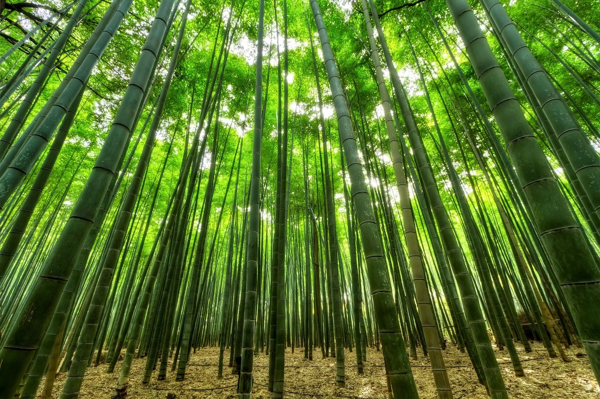
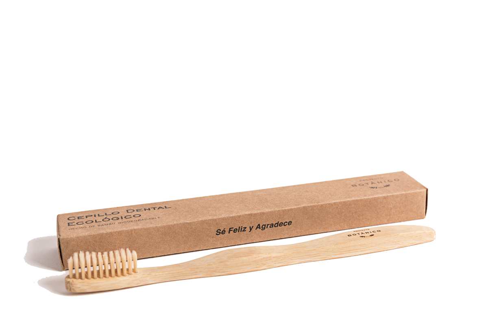
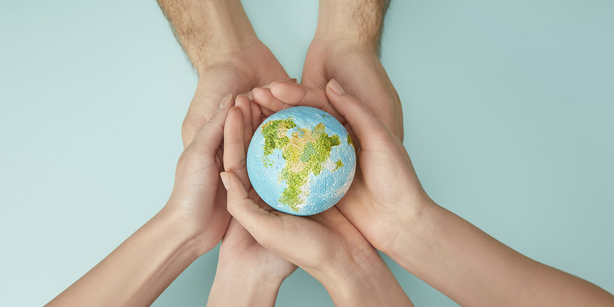

Compromiso con el planeta
En Copple creemos en un futuro más verde. Nuestros cepillos están hechos con bambú 100% natural proveniente de fuentes sostenibles de Australia y Nueva Zelanda.

Materiales renovables
Utilizamos solo bambú de rápido crecimiento, sin pesticidas ni fertilizantes químicos.

Packaging compostable
Todos nuestros empaques son biodegradables y compostables.

Menos plástico
Reducimos el uso de plásticos en un 90% respecto a los cepillos convencionales.